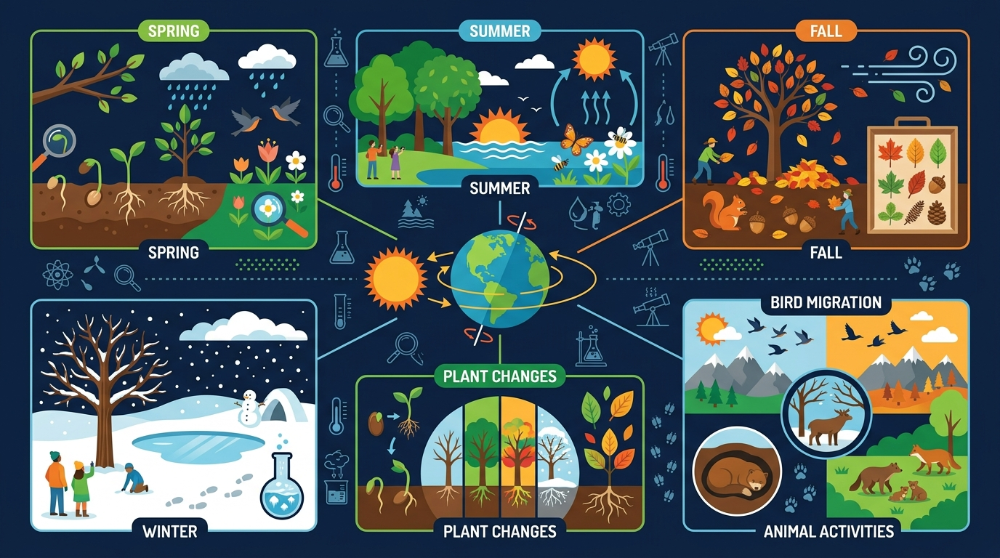

春天为什么那么多花？冬天为什么那么冷？
一起来探索春夏秋冬四季变化的奥秘！

对应 2022 课标 · 小学科学 G2 · 地球与宇宙科学领域
说出春夏秋冬四季的气温、降水、日照特点及代表性动植物变化
知道四季形成与地球公转和地轴倾斜有关
说出四季对人类穿衣、农业生产和节日的影响
能比较不同季节的温度和降水差异，读懂简单气候图
❓ 为什么夏天热冬天冷，难道太阳离我们远近不同？
❓ 为什么南北半球季节相反？
❓ 四季变化对动物行为有什么影响？
学完这一课，这些问题你都能自信地回答。
用故事开始今天的探索
一年有365天，我们会经历很多不同的天气。有时候穿短袖，有时候穿厚棉衣。有些花只在特定时候开放，树叶有时候绿、有时候黄。
为什么每年都会重复经历这些变化？为什么春天总在冬天后面？为什么北极熊生活的地方没有夏天，而我们这里却有四个不同的季节？
探索春夏秋冬的特征规律，揭开四季形成背后的科学秘密——地球的公转和地轴倾斜！
导致四季变化的主要原因是？
北半球夏至时，太阳直射？
5个场景 · 22秒 · 涵盖春夏秋冬特征和四季成因
每个季节都有独特的气温、降水和生命活动
点击下方按钮切换查看温度、降水和日照时长的季节差异
选择数据类型，观察四个季节的变化规律。点击柱状图获取详细数据。
地球公转 + 地轴倾斜 → 四季形成的两大秘密
地球绕太阳公转一圈约需365天。在公转过程中，地球与太阳的相对位置不断变化，导致不同时间获得的阳光强度不同。
地轴向一侧倾斜约23.5°。这意味着不同季节，同一地区接收阳光的角度不同——直射时热（夏天），斜射时冷（冬天）。
穿衣、农业和节日，都跟四季紧密相关
春秋：薄外套
夏天：短袖短裤
冬天：厚棉衣羽绒服
春播：播种庄稼
夏管：浇水除草
秋收：收割粮食
冬藏：储存粮食
春节（冬末春初）
清明踏青（春）
端午（夏）
中秋丰收（秋）
春：冬眠动物苏醒
夏：昆虫活跃繁殖
秋：候鸟南迁储粮
冬：熊、刺猬冬眠
把下面的动植物特征拖到正确的季节区域
拖动下面的特征卡片到正确的季节格子，完成后点击「检查答案」